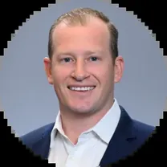

Held Oct 26, 2026. 82 attendees.
Jake Zwiebel
Jake advises industrial companies on mergers, acquisitions and capital raises. He started with internships in Tampa, went to New York to work with hedge funds at Bloomberg, then came home and climbed from analyst to VP in banking.
His path
- Getting startedTampa PE & VC internships
Interned at HealthEdge Investment Partners and Ballast Point Ventures, two Tampa private equity and venture capital firms.
- New YorkBloomberg
Portfolio analyst and account manager supporting hedge fund clients.
- Back to TampaSkyway Capital Markets
Joined the boutique investment bank as an analyst on M&A and corporate finance deals, then was promoted to vice president.
- TodayRaymond James
VP on the Diversified Industrials investment banking team.
Why his path matters
- Local internships count.His start was at Tampa firms, not Wall Street. The Tampa Bay finance scene is a real launchpad.
- Non-linear is fine.A markets and data role at Bloomberg came before banking. Skills transfer.
- Boutiques build reps.Smaller banks put analysts on live deals early, which sets up the jump to a bigger platform.
Good questions to ask
- What did you learn at Bloomberg that still helps you as a banker?
- How was the move from a boutique to Raymond James different from what you expected?
- What makes an underclassman stand out when Raymond James recruits?
Apply to Raymond James
Headquartered across the bridge in St. Petersburg. Mention you heard Jake speak at AKPsi when you reach out.
Search all Raymond James jobs ↗ IB Summer Analyst programs ↗ Internships & student programs ↗